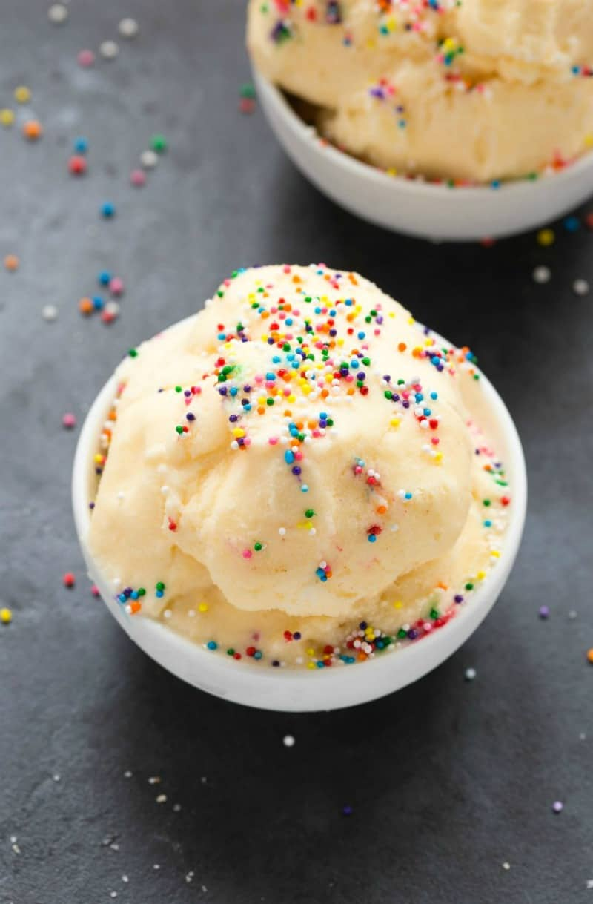

Home
Protein Ice Cream

Try this protein ice cream for a cold, filling end of the day treat.
Ingredients
- 2 14-oz cans coconut milk chilled
- 1 cup vanilla protein powder
- 1-2 tablespoon granulated sweetener of choice – I like to use monkfruit
- 1 teaspoon vanilla extract – optional, but recommended
Directions
- Place a large, deep loaf pan or deep pan in the freezer.
- In a blender or food processor, add your coconut milk and blend until smooth and creamy. Add your protein powder and granulated sweetener or dates and blend until a thick and creamy texture remains.
- Transfer workout protein ice cream to the loaf pan. To ensure it doesn’t become too icy, lightly mix your ice cream ever 20-30 minutes for the first hour.
- Thaw for 10-15 minutes before eating. Lightly wet an ice cream scoop before scooping the ice cream into a bowl.
- To enjoy it soft serve style, let it thaw to desired texture.
Now you’re ready for a frozen treat on a hot day that won’t ruin your gains.